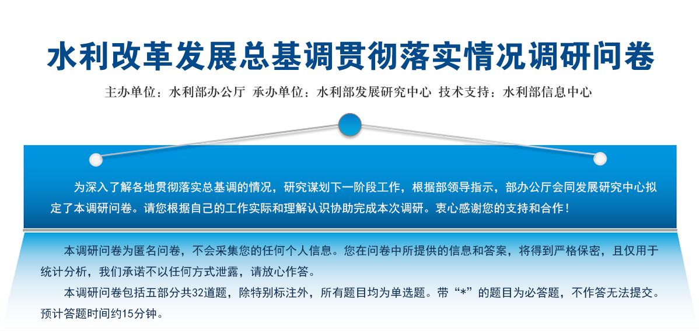
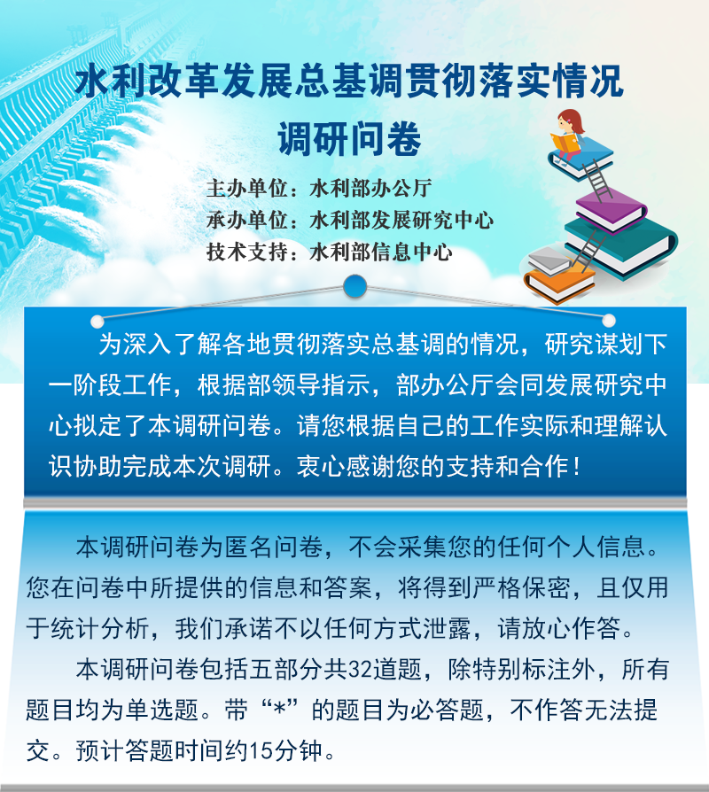

 
一、填写人基本情况
1. 您所在的地区或单位（如您选择D选项，请填写第2题和第3题；选择其他选项，请跳过第2题和第3题）：
A. 水利部机关
B.流域管理机构
C.其他直属单位
D.省、自治区、直辖市
2. 您所在的省、自治区、直辖市（第1题选D的作答）：
•北京市
•天津市
•河北省
•山西省
•内蒙古自治区
•辽宁省
•吉林省
•黑龙江省
•上海市
•江苏省
•浙江省
•安徽省
•福建省
•江西省
•山东省
•河南省
•湖北省
•湖南省
•广东省
•广西壮族自治区
•海南省
•重庆市
•四川省
•贵州省
•云南省
•西藏自治区
•陕西省
•甘肃省
•青海省
•宁夏回族自治区
•新疆维吾尔自治区
3. 您所在的工作单位（第1题选D的作答）：
A. 省级水行政主管部门
B. 省级水行政主管部门直属单位
C. 地市级水行政主管部门
D. 县级水行政主管部门
E.其他
4. 您的工作职务等级：
A. 厅局级
B. 县处级
C. 科级
D. 一般工作人员
二、对水利改革发展总基调的认识和理解
5. 您是否了解水利部提出的“水利工程补短板、水利行业强监管”水利改革发展总基调的主要内容？
A. 了解
B. 基本了解
C. 不了解
6. 您认为水利改革发展总基调是否符合当前水利工作实际？
A. 符合
B. 基本符合
C. 不符合
D. 不了解
7. 您身边同事对于水利改革发展总基调的认识情况？
A. 认识一致
B. 认识基本一致
C. 认识不一致
D. 不了解
8. 您认为“补短板”与“强监管”哪个更为重要？
A. 补短板
B. 强监管
C. 同等重要
9. 您所在单位贯彻落实水利改革发展总基调的态度如何？
A. 积极
B. 较积极
C. 一般
D. 不积极
E.不了解
10. 您所在单位或地区贯彻落实水利改革发展总基调的难度如何？
A. 难度很大
B. 难度较大
C. 难度不大
D.不了解
11. 您所在单位或地区贯彻落实水利改革发展总基调的成效如何？
A. 好
B. 较好
C. 一般
D. 较差
E. 不了解
三、水利工程补短板贯彻落实情况
12. 您认为所在地区水利工程补短板的主要领域有哪些？(最多选2项)
A.防洪
B.供水
C.生态修复
D.水利信息化
E.不清楚
13. 您认为造成您所在地区水利工程存在较大短板的原因是什么？（可多选）
A. 自然条件
B. 历史欠账
C. 资金匮乏
D. 规划和前期工作滞后
E. 建设标准偏低
F. 不清楚
G. 其他
14. 去年以来，您认为所在地区补短板工作进展如何？
A. 超预期
B. 符合预期
C. 低于预期
D. 不清楚
15. 您认为所在区域下一步加快补短板的制约因素有哪些？（可多选）
A. 用地难
B. 资金筹措难
C. 移民难
D. 环保严
E. 前期审批环节多
F.区域协调难度大
G. 不了解
16. 您认为当前推进补短板应优先采取哪些措施？（可多选）
A. 建立责任制
B. 加强规划和前期工作
C. 拓宽水利投融资渠道
D. 加大部门间协调力度
E. 完善水利工程标准体系
F. 改革水利建管体制
G. 不清楚
四、水利行业强监管贯彻落实情况
17. 您认为当前水利行业强监管是否有必要？
A. 十分必要
B. 有必要
C. 没有必要
18. 您认为履行水利行业强监管职责的主体是谁？
A.水利专职监督部门
B.各水利业务管理部门
C.两者都是
19. 您认为水利行业强监管的对象应该是谁？（可多选）
A. 水利管理部门
B. 地方政府
C. 企事业单位和社会公众
20. 您认为目前实际工作中水利行业强监管的重点对象是谁？
A. 水利管理部门
B. 地方政府
C. 企事业单位和社会公众
21. 您认为近两年本地水利行业监管力度有何变化？
A. 力度明显加大
B. 力度有所增强
C. 力度变化不大
D. 不清楚
22. 您认为今年水利监管工作与以往相比最大的变化是什么？（可多选）
A. 成立了专门的监督机构和监督队伍
B. 监督检查的业务领域更加广泛
C. 监督检查的频率更加频繁
D. 对于监督检查发现的问题追责更加严肃
E. 监督检查手段更加丰富
F. 无明显变化
23. 据您了解，您所在单位领导是否带队以“四不两直”的方式开展了监督检查工作？
A. 是
B. 否
C. 不清楚
24. 据您了解，您所在单位是否对监督检查过程中发现的问题进行了督促整改或者开展了“回头看”工作？
A. 是
B. 否
C. 不清楚
25. 您认为今年水利行业强监管工作的主要成效是什么？（可多选）
A. 水利行业强监管的威慑力逐步显现
B. 重视水利行业强监管的良好氛围逐渐形成
C. 在强监管过程中进一步摸清了水利底数
D．进一步完善了相关业务领域强监管政策法规体系
E. 有效促进了相关业务领域建立良性运行机制，推动了行业管理能力的提升
F. 有效解决了一些突出的涉水问题
G. 成效不明显
26. 您认为通过水利行业强监管，本地区哪些业务领域的管理能力和水平有较大提高？（可多选）
A. 江河湖泊
B. 水资源
C. 水利工程
D. 水土保持
E. 水利资金
F. 水利政务
G.无明显提高
27. 您认为当前开展强监管工作的主要障碍是什么？（可多选）
A. 水利行业尚未形成强监管共识
B. 水利行业强监管的体制、机制、制度不够完善
C. 水利行业强监管手段过于单一，技术支撑不足
D. 水利行业监督执法能力不足，不能有效追责
E. 水利行业强监管人员和经费得不到有效保障
F. 不清楚
28. 您认为当前水利监督检查工作存在的主要问题是什么？（可多选）
A. 水利监督检查存在形式主义、官僚主义，走过场严重
B. 水利监督检查存在不作为、乱作为的问题
C. 水利监督检查工作缺少统一规划，存在重复监督检查
D. 各级部门开展的水利监督检查程序和标准不统一
E. 体制机制不顺畅，地方水利部门监督职责没有得到充分发挥
F. 不清楚
29. 您认为影响监督检查效果的主要原因有哪些？（可多选）
A. 存在的问题不能被及时发现
B. 问题发现了但整改不到位，不能举一反三
C. 问题背后的体制性政策性障碍没有得到有效解决
D. 问题发生后问责警示力度不够
E. 不清楚
30. 您认为当前水利部门的机构设置和人员配备能否满足各领域强监管的要求？
A. 满足
B. 基本满足
C. 不满足
D. 不好判断
31. 您对于当前水利强监管工作的整体评价是？
A. 很满意
B. 基本满意
C. 有待改进
D. 很差
五、其他
32. 请简单谈谈您对今后一个时期贯彻落实水利改革发展总基调的方向思路和工作重点的建议。
提 交
 京公网安备11040102700040号
京公网安备11040102700040号